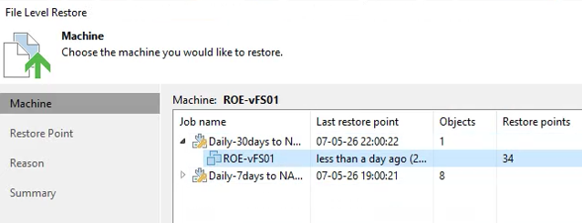

Tutorial – File Server Health Check
This check verifies that file-level restore is operational in the backup solution.
File-level restore allows recovery of:
Open the Veeam console and navigate to:
Then:
Verify that files and folders are visible in the restore browser.
